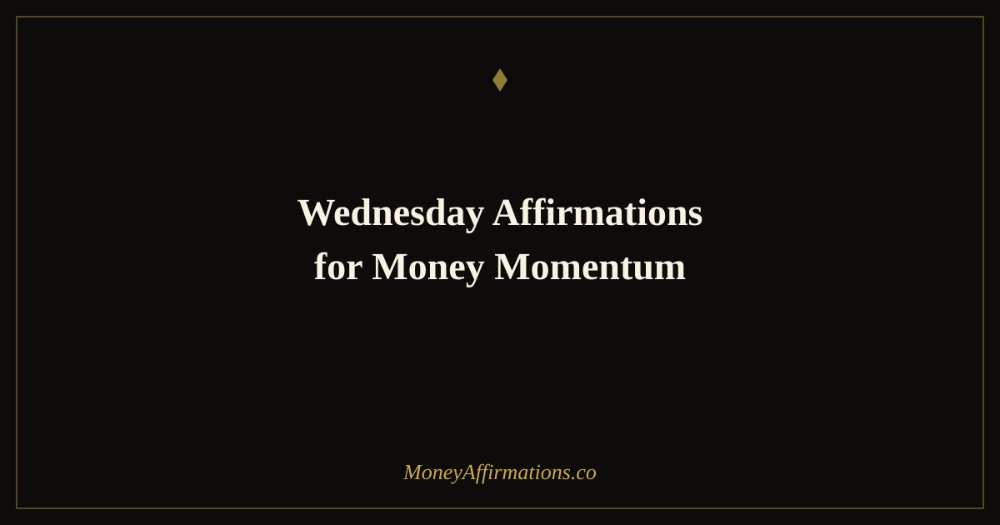

50 Wednesday Affirmations for Money Momentum and Midweek Drive

Wednesday is where weeks are won or lost. The clean energy of Monday has faded, Friday still feels far away, and the brain's natural motivation signal is at its weekly low. Most people coast through Wednesday on autopilot — getting through meetings, moving slowly on their most important work, and telling themselves they will push harder tomorrow. Tomorrow becomes Thursday. Thursday becomes Friday afternoon. And the week closes with less done than it could have been.
These 50 affirmations are built specifically for Wednesday's unique position in the week. They are structured across five time windows — morning reignition, mid-morning hustle, lunchtime reset, afternoon push, and evening reflection — so you always have the right energy for the right moment. Wednesday does not have to be a dip. With the right mindset, it becomes the inflection point where real money momentum builds.
What are Wednesday money momentum affirmations?
Wednesday money momentum affirmations are statements designed to counteract the midweek motivation dip and reconnect you with your financial drive precisely when natural energy is lowest. Unlike Monday affirmations that lean on fresh-start psychology or Friday affirmations that use anticipation of the weekend as fuel, Wednesday affirmations must create their own momentum — they cannot borrow it from a nearby temporal landmark.
This makes them a more demanding and ultimately more powerful mindset tool. When you can generate genuine energy and focus on a Wednesday afternoon, you have built a skill that will serve you throughout the year — through slow business months, difficult financial periods, and any time external motivation is unavailable. These affirmations train the muscle of self-generated drive, anchored to specific moments throughout the working day.
50 Wednesday affirmations for money momentum
Wednesday is the inflection point of the week — the moment when momentum either builds or fades. These affirmations are timed to your day so you can use the right energy at the right moment.
Wednesday morning — reignite your money energy
- Wednesday is not a drag — it is a fresh opportunity to build real momentum.
- The week is still young and my best earning days may still lie ahead of me.
- I reignite my financial focus this morning with full intention and clear purpose.
- I wake up on Wednesday with the same drive I brought to Monday, fully recharged.
- Every Wednesday morning I get to decide what the second half of my week looks like.
- I bring my full earning energy to this day — nothing held back, nothing coasted through.
- Wednesday is my midweek reset, and I use it to push myself further than I thought I could go.
- I am worth a strong Wednesday — my goals are worth a strong Wednesday.
- I refuse to drift through the middle of the week when momentum is exactly what I need.
- This morning I choose drive over drift, and the rest of my week will reflect that choice.
Mid-morning hustle — stay in earning mode
- I create real value right now, and value always converts to income over time.
- I am fully in earning mode — my focus is sharp, my effort is genuine, my output is strong.
- Every hour of focused work on Wednesday is an investment in my financial future.
- I do not coast — I bring my full self to the work that matters most.
- My skills and efforts are worth good money, and I act accordingly today.
- I am building the financial results I want through the quality of work I do right now.
- Mid-morning is where real progress happens, and I show up for it completely.
- I stay in the zone of high-value work and let distractions pass without catching them.
- My best professional self is available to me right now — I call on that self fully.
- I honour my earning potential by working with intention, not just motion.
Lunchtime reset — refuel your abundance mindset
- I pause at midday to appreciate how much I have already accomplished today.
- The halfway point of my week is a reason to celebrate my consistency, not a marker of how much is left.
- I refuel my body and my mindset, knowing the afternoon ahead holds real opportunity.
- I am grateful for the income, the work, and the momentum I have already generated this week.
- My relationship with money gets stronger every day I show up and do the work.
- This lunchtime reset restores my energy and sharpens my focus for the afternoon ahead.
- I acknowledge what is going well today — and there is more going well than I sometimes notice.
- I feed my abundance mindset with gratitude, rest, and genuine appreciation for my progress.
- The second half of this Wednesday is full of possibility, and I am ready to meet it.
- I recharge completely during this break so I can give the afternoon my sharpest self.
Afternoon push — finish the week strong
- I do not coast when Thursday and Friday are still ahead — I press forward with everything I have.
- Wednesday afternoon is where the week's real momentum is made or missed, and I choose to make it.
- Every task I complete this afternoon brings my financial goals measurably closer.
- I push through the midweek resistance and come out the other side with something to show for it.
- There are two more full working days after today — I am not coasting to the weekend, I am building toward it.
- My most important financial opportunities may still arrive this week — I stay open and active.
- I bring the same quality of effort to Wednesday afternoon that I would bring to Monday morning.
- The discipline I show on Wednesday afternoons is exactly what separates steady earners from inconsistent ones.
- I choose the harder, more productive option on this Wednesday afternoon, and I am proud of that choice.
- Wednesday afternoon is not a wind-down — it is a wind-up for the strong finish I am already planning.
Wednesday evening — honour today's progress
- I close this Wednesday by acknowledging every step I took toward financial freedom today.
- Every day I show up is a day I am building evidence that I can do this.
- Today I moved forward — and forward, even slowly, is exactly the right direction.
- I rest this evening knowing I gave a genuine Wednesday effort and it compounds over time.
- The small wins of today are the foundations of next month's financial results.
- I am proud of the consistency I am building — Wednesday included, Wednesday especially.
- I let this day close with gratitude for the work done, the value created, and the progress made.
- Tomorrow is Thursday and I arrive at it with momentum, not exhaustion.
- I go to sleep on Wednesday night one day richer in experience, in skill, and in financial confidence.
- Every completed Wednesday is proof that I am someone who does not give up mid-week — and that matters.
How to use these affirmations
The five time-of-day groups are designed to be read at their corresponding moments rather than all at once. Reading the full set in the morning will give you a broad overview, but you will get more practical benefit by returning to the right group at the right point in your Wednesday. Set three calendar reminders: one for 8am (morning reignition), one for 12:30pm (lunchtime reset), and one for 4pm (afternoon push).
The evening reflection group works best as a journal prompt — after reading the ten affirmations, spend two minutes writing down three specific things you actually progressed on today. This bridges the gap between affirmation and evidence: you are not just asserting progress, you are documenting it. Over several Wednesdays, your journal becomes a running record of midweek momentum that feeds the following week's confidence.
On days when motivation is particularly low, the mid-morning hustle group is your most important tool. Read it slowly, and before returning to work, identify the single highest-value action you can take in the next ninety minutes. Wednesday slumps are almost always broken by one good decision to start something meaningful, not by waiting for motivation to arrive on its own.
The midweek slump is real — here is the neuroscience behind it (and how to beat it)
The midweek motivation dip is not a personal failing or a sign of insufficient commitment. It is a neurological pattern with well-documented causes. Dopamine, the brain's primary motivation and reward-signalling chemical, is influenced by both anticipation and novelty. Monday carries the novelty of a fresh start; Friday holds the anticipation of the weekend. Wednesday has neither, which means dopamine signals are at their weekly low and the brain registers less internal reward for effort — even when the work is objectively as important as it was on Monday.
Larson and Csikszentmihalyi's experience sampling research — where participants were randomly prompted throughout the week to report their mood, energy, and engagement — consistently found a midweek valley in positive affect and motivation. The pattern is so reliable it appears across industries, cultures, and work arrangements. Knowing that the dip is structural rather than personal is itself a reframe: you are not less motivated because something is wrong with you. You are experiencing a predictable weekly rhythm that can be deliberately interrupted.
The fresh start effect, demonstrated by Dai, Milkman, and Riis, shows that people pursue goals more vigorously at temporal landmarks because they perceive a psychological separation from past failures. Wednesday affirmations work by engineering a mini fresh-start: by treating Wednesday morning as its own reset point with its own language and intention, you import some of Monday's neurological benefit into the middle of the week. The brain responds to the cue and generates a corresponding motivation signal.
Small wins also play a critical role. Research on motivation consistently shows that completing a defined task triggers a dopamine release that makes the next task easier to start — what psychologists call the progress principle. Wednesday affirmations, particularly when paired with identifying a single high-value action, help create the first small win that generates the chain reaction of midweek momentum.
Tips to make them work faster
- Treat Wednesday morning as a second Monday: Set a specific morning intention for Wednesday — a financial task, an outreach goal, a creative project — just as you would on Monday. The act of setting the intention activates the fresh-start psychology regardless of the day.
- Read the afternoon group before you need it: Do not wait until you are already in an afternoon slump to read the afternoon push affirmations. Read them at lunch while your energy is still reasonable, so the statements are already loaded when the 3pm dip arrives.
- Celebrate specifically: When reading the evening reflection group, name at least one financial or professional action you took today that you would not have taken if you had coasted. Specificity makes the celebration real and reinforces the behaviour.
- Stack with a Wednesday anchor habit: Pair Wednesday affirmations with something you already do every Wednesday — a specific meeting, a workout, or a coffee break. The existing habit creates the trigger that ensures you actually use the affirmations rather than forgetting them mid-week.
- Use the midday group as a permission slip: The lunchtime reset group is deliberately appreciative rather than demanding. If you are beating yourself up about the morning's output, this group gives you permission to close the morning, recognise what you did do, and begin the afternoon fresh. Self-compassion mid-week sustains energy better than self-criticism does.
Frequently asked questions
Why do I lose money motivation in the middle of the week?
The midweek motivation dip is a well-documented phenomenon with both neurological and psychological causes. Dopamine levels, which drive motivation and reward-seeking behaviour, tend to follow patterns across the week — peaking at fresh starts (Monday) and before anticipated rewards (Friday) and dipping in the middle. Additionally, decision fatigue accumulates across Monday and Tuesday, reducing willpower and focus by Wednesday. The further you are from any temporal landmark — start or end of the week — the lower the brain's natural motivation signal. Wednesday affirmations work precisely because they artificially create a mini fresh-start signal mid-week, mimicking the neurological boost of a temporal landmark.
How is Wednesday different from Monday or Friday for affirmations?
Monday affirmations are about launching — they capitalise on the fresh-start energy of a new week and help you set direction. Friday affirmations are about closing strong — they help you finish with intention and carry momentum into the weekend. Wednesday affirmations serve a different function: they reignite. By Wednesday, the initial energy of Monday may have faded, and Friday still feels distant. Wednesday affirmations are specifically designed to rebuild momentum from the middle of the week rather than from a natural restart point — which is actually a more sophisticated mindset skill.
Can I use these affirmations on other midweek days?
Yes — Tuesday and Thursday share Wednesday's midweek energy and these affirmations translate well to either day. Thursday in particular benefits from the afternoon momentum and evening reflection groups, as it is the last high-energy workday for many people. If you find yourself hitting a slump on any Tuesday, Wednesday, or Thursday, reaching for this set will be more effective than repeating Monday or Friday affirmations, which are calibrated for different psychological moments.
Wednesday momentum becomes Friday results. Carry the energy you build this midweek all the way to the close of the working week with our Friday affirmations for money — and for the full foundation of a money-positive mindset, explore our complete money affirmations collection.